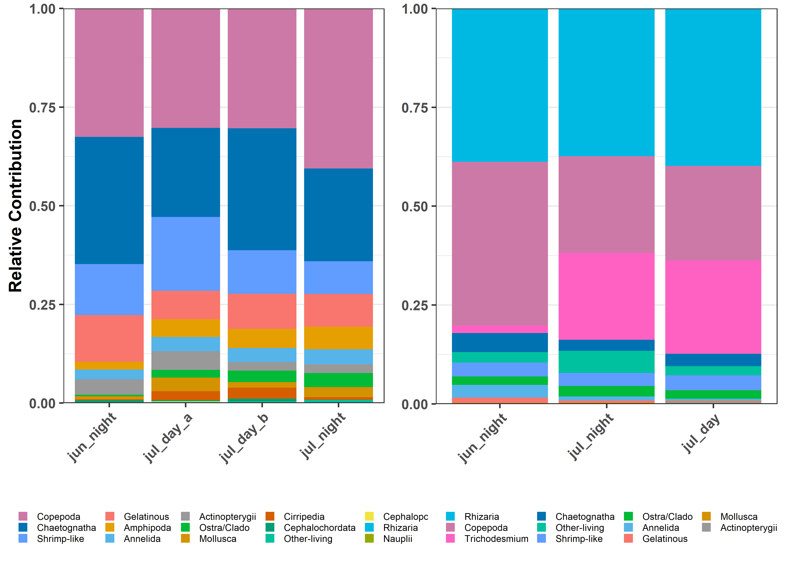

Code
rm(list = ls())
library(cowplot)
library(ggplot2)
library(DT)
library(EcotaxaTools)
plot_list <- readRDS('../Output/main_fig_02_rel-contribution.rds')
dat_list <- readRDS('../Output/data_02_rel-contrib.rds')Here is a comparison of the relative abundance of different taxa sampled by the two devices
plot_grid(plot_list$moc_comp + theme(axis.text.x = element_text(angle = 45,
hjust = 1),
legend.key.size = unit(.25,'cm'),
legend.text = element_text(size = 6),
legend.position = 'bottom',
plot.background = element_blank()),
plot_list$uvp+ theme(axis.text.x = element_text(angle = 45,
hjust = 1),
legend.key.size = unit(.25,'cm'),
legend.text = element_text(size = 6),
legend.position = 'bottom',
plot.background = element_blank()))
Pooling across all Tows/Casts we can get a general Sense of how the UVP and MOCNESS sample different taxonomic groups.
Below are data which correspond to the figures shown above:
---
title: Comparison of Relative Abundance by two devices
---
Here is a comparison of the relative abundance of different taxa sampled by the two devices
```{r Set-up, warning = F}
rm(list = ls())
library(cowplot)
library(ggplot2)
library(DT)
library(EcotaxaTools)
plot_list <- readRDS('../Output/main_fig_02_rel-contribution.rds')
dat_list <- readRDS('../Output/data_02_rel-contrib.rds')
```
```{r Plot, warning = F, fig.height=5, fig.cap = 'Relative contribution of different zooplankton groups to the total measured by MOCNESS (left) and UVP (right). For MOCNESS, June was night, July had three tows; two daytime (m14, m15) and one nighttime (m16)', out.width="100%"}
#| column: body-outset
plot_grid(plot_list$moc_comp + theme(axis.text.x = element_text(angle = 45,
hjust = 1),
legend.key.size = unit(.25,'cm'),
legend.text = element_text(size = 6),
legend.position = 'bottom',
plot.background = element_blank()),
plot_list$uvp+ theme(axis.text.x = element_text(angle = 45,
hjust = 1),
legend.key.size = unit(.25,'cm'),
legend.text = element_text(size = 6),
legend.position = 'bottom',
plot.background = element_blank()))
```
---------------------------------------------------------------------------
Pooling across all Tows/Casts we can get a general Sense of how the UVP and MOCNESS sample different taxonomic groups.
```{r Table-Moc-all}
#| column: body-outset
datatable(dat_list$moc_filtered_all, rownames = F, colnames = c('Taxa','Percent Contribution'),
caption = 'Relative Contribution of taxa collected by MOCNESS which were above 0.894mm.')
```
```{r Table-UVP-all}
#| column: body-outset
datatable(dat_list$uvp_all, rownames = F, colnames = c('Taxa','Percent Contribution'),
caption = 'Relative Contribution of taxa imaged by the UVP')
```
-----------------------------------------------------------
Below are data which correspond to the figures shown above:
```{r Table-Moc-by-cast}
datatable(dat_list$moc_filtered, rownames = F, colnames = c('Taxa','Percent Contribution','Tow'),
caption = 'Relative Contribution of taxa collected by MOCNESS which were above 0.894mm. Separated by cast')
```
```{r table-uvp-by-cast}
datatable(dat_list$uvp, rownames = F, colnames = c('Taxa','Percent Contribution','Tow'),
caption = 'Relative Contribution of taxa imaged by the UVP. Separated by month and time of day')
```